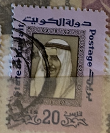
| SOURCE | TITLE| IMAGE MATCH | click to source page |
| Shutterstock | Kuwait Circa 1966 Stamp Printed Kuwait Stock Photo 170716049 | Shutterstock | 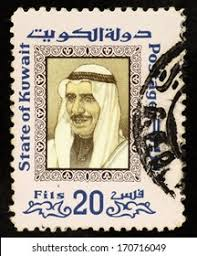 |
| HipStamp | Kuwait (Pp01003B) SG 659-64 MNH | Middle East - Kuwait, Stamp / HipStamp | 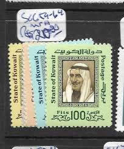 |
| Alamy | The ruler of Kuwait, Abdullah III Al-Salim Al-Sabah, centre in light robes, passes heavily-armed guards as he walks along a passageway in his Seif Palace in Kuwait on June 29, 1961. Advisors | 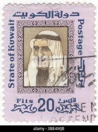 |
| Alamy | Portrait of the sheikh Cut Out Stock Images & Pictures - Alamy | 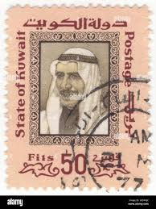 |
| Shutterstock | Sheikh Kuwait: Over 460 Royalty-Free Licensable Stock Photos | Shutterstock | 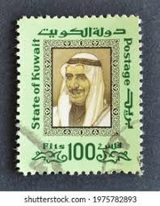 |
| Alamy | Kuwait police Cut Out Stock Images & Pictures - Alamy | 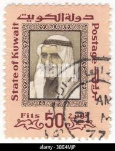 |
| eBay | First Day Cover Kuwait Stamps (1961-Now) for sale | eBay | 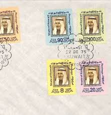 |
| Shutterstock | 3+ Thousand Kuwait Man Portrait Royalty-Free Images, Stock Photos & Pictures | Shutterstock | 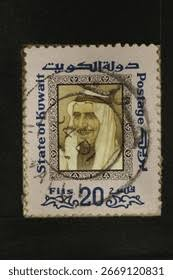 |
| eBay | KUWAIT 307 - Sheik Abdullah al-Salem al-Sabah (pb43768) | eBay | 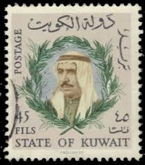 |
| بوست كارد صاحب السمو الشيخ صباح السالم الصباح ⛔️الضرر واضح داخل المنشور السعر : مراسلة الخاص واتساب : 009647514038705 لدينا شحن لجميع دول العالم | 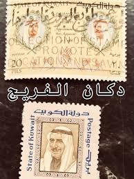 | |
| eBay | KUWAIT 228 - Sheik Abdullah al-Salem al-Sabah (pb43737) | eBay | 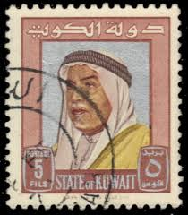 |
| 1958 Kuwait - Abdullah al Salim al Sabah | 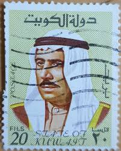 | |
| HipStamp | Kuwait #640-645 Unused Single (Complete Set) | Middle East - Kuwait, Stamp / HipStamp | 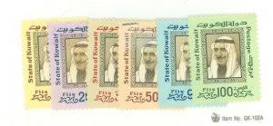 |
| eBay | Air Mail Kuwaiti Stamps (1961-Now) for sale | eBay | 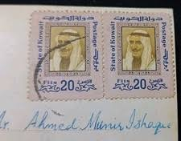 |
| OLX Egypt | طوابع in Al Amiriyyah, Classifieds in Al Amiriyyah | dubizzle Egypt (OLX) | 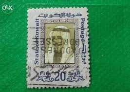 |
| eBay | Used Postage Kuwaiti Stamps (1961-Now) for sale | eBay | 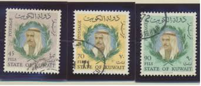 |
| Colnect | Stamp: Sheik Sabah as-Salim Al Sabah (Kuwait(Sheikh Sabah as-Salim Al Sabah Definitives) Mi:KW 301,Sn:KW 307,Yt:KW 295,Sg:KW 302 📮 | 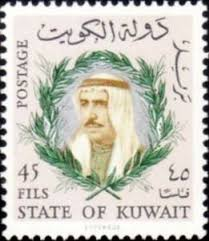 |
| Stamp Collecting Blog | Bahrain definitive stamp series of 1976/1980 – varieties | 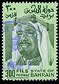 |
| howtobuildanarchive.com | How to Build an Archive | 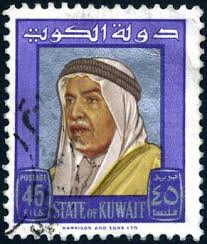 |
| eBay | KUWAIT 306 - Sheik Abdullah al-Salem al-Sabah (pb43766) | eBay | 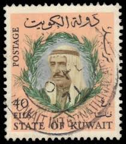 |
| kuwait philatelic | Definitive Kuwait ,Sheikh Sabah Salem Al-Sabah 1975 - KUWAIT PHILATELIC | 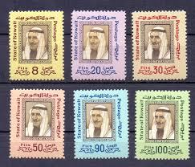 |
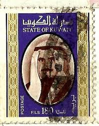 | ||
| Alamy | Postage stamp from Kuwait in the 3rd World Telecommunications Day series issued in 1971 Stock Photo - Alamy | 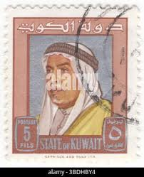 |
| Aisha Alenezi (aishaalenezi1) - Profile | Pinterest | 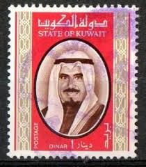 | |
| HipStamp | Search "Kuwait 1966" in Middle East / HipStamp | 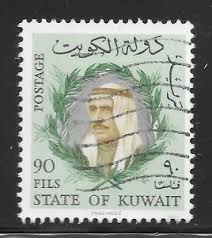 |
| Dreamstime.com | 455 Ancient Kuwait Stock Photos - Free & Royalty-Free Stock Photos from Dreamstime | 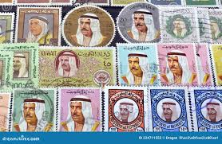 |
| Free stamp catalogue | Stamps from Kuwait - Freestampcatalogue.com - The free online stampcatalogue with over 500.000 stamps listed. | 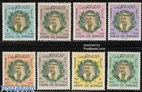 |
| eBay | Kuwait - 1978 - Scott # 763 - Used, Light Cancel - small tear on right (P-572) | eBay | 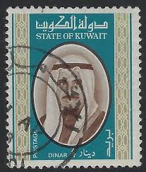 |
| Dreamstime.com | 1959 Kuwait 8 Fils Sheikh Abdullah III Al-Salim Al-Sabah Used Stamp Editorial Stock Photo - Image of advertising, postal: 414177678 | 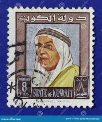 |
| eBay | Kuwait Stamp Scott# 763 Sheik Sabah 1978 C525 | eBay | 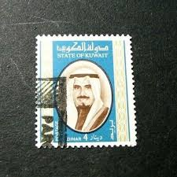 |
| eBay UK | Used Postage Kuwaiti Stamps (1961-Now) for sale | eBay UK | 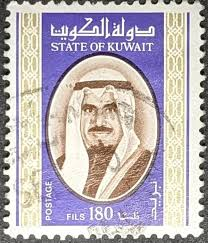 |
| eBay | KUWAIT 309 - Sheik Abdullah al-Salem al-Sabah (pb43770) | eBay | 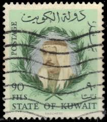 |
| The Palestinian Museum Digital Archive | The Palestinian Museum Digital Archive - أرشيف المتحف الفلسطيني الرقمي : Still Image : A Kuwait Postage Stamp [0075.01.0016] | 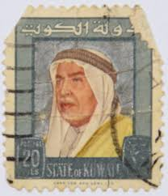 |
| 28 Kuwait postage stamps ideas | postage stamps, kuwait, stamp | 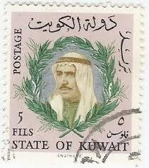 | |
| Alamy | Postage stamp from the Gold Coast in the Queen Elizabeth II and Local Scenes Issues (1952-54) series issued in 1954 Stock Photo - Alamy | 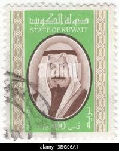 |
| kuwait philatelic | Stamps Archives - Page 24 of 55 - KUWAIT PHILATELIC % | 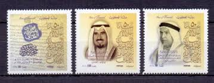 |
| eBay | 1964 State of Kuwait Sc#243 - 1 Dinar - Sheik Abdullah postage stamp. Cv$6 | eBay | 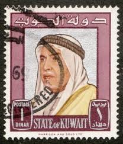 |
| eBay | KKUWAIT SC# 472 1969 90 FILS SHEIK SABAH USED OLD VINTAGE VF DEFINITIVE STAMP | eBay | 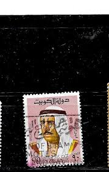 |
| Alamy | Postage stamp from Kuwait in the Rheumatism Year series issued in 1977 Stock Photo - Alamy | 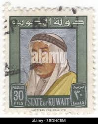 |
| kuwait philatelic | Appointment of Jaber Ahmed 1966 - KUWAIT PHILATELIC | 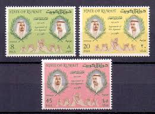 |
| eBay | KUWAIT # 242 Used SHEIK ABDULLAH, ROYALTY (1) | eBay | 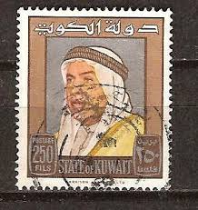 |
| Alamy | Sheikh Abdullah III Al-Salim Al-Sabah, postage stamp, Kuwait, 1964 Stock Photo - Alamy | 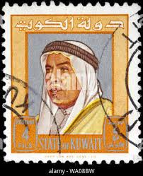 |
| Shutterstock | Kuwait Circa 1969 Cancelled Postage Stamp Stock-foto 1975782887 | Shutterstock | 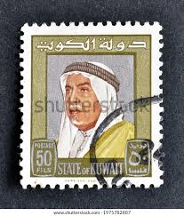 |
| eBay | AOP Kuwait #762-3 1978 1d & 4d used SCV $70 | eBay | 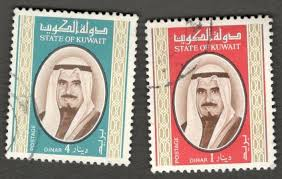 |
| Freestampcatalogue.com | Stamps from Kuwait - Freestampcatalogue.com - The free online stampcatalogue with over 500.000 stamps listed. | 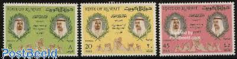 |
| ahradwani.com | Kuwait | Ali's Photography Space... | 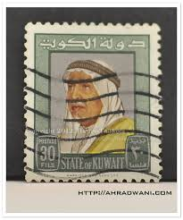 |
| StampWorldHistory | Kuwait | Stamps and postal history | StampWorldHistory | 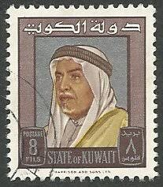 |
| modlowarvai.com | Listings from 'willie371' in Stamps > Middle East > Bahrain (1971-Now) - 40 items per page - Highest Price First | Modlowarvai | 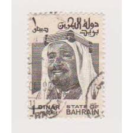 |
| Shutterstock | Kuwait Circa 1968 Cancelled Postage Stamp Stock Photo 1975782896 | Shutterstock | 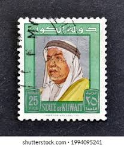 |
| HipStamp | Gulf KUWAIT Postmarks ABU HLEIFA AHMADI FAHAHEEL 1969-70 Pieces{3} MAL641 | Middle East - Kuwait, Stamp / HipStamp | |
| eBay | Kuwait 1966 Sc # 345-47 MH OG | eBay | |
| eBay | Kuwait 1968 Sc # 389-90 MH OG | eBay | |
| eBay | BAHRAIN Scott 236 Mint NH | eBay | |
| eBay | Bahrain Scott #239 MNH Sheik Isa 2d CV$22+ 384636 | eBay | |
| Shutterstock | 2+ Thousand Stamp Kuwait Royalty-Free Images, Stock Photos & Pictures | Shutterstock | |
| Shutterstock | 17 1964 kuwait 免版税图片、库存照片和图像| Shutterstock | |
| eBay | KUWAIT #726 1977 80f SHIEK SABAH F-VF USED | eBay | |
| مركز يوسف المطرف للتسجيلات بإدارة يوسف الوهيبي -المحل -بيجر | ||
| eBay | AOP Bahrain #239/239a used (SG 244c/244ca £30.50) | eBay |